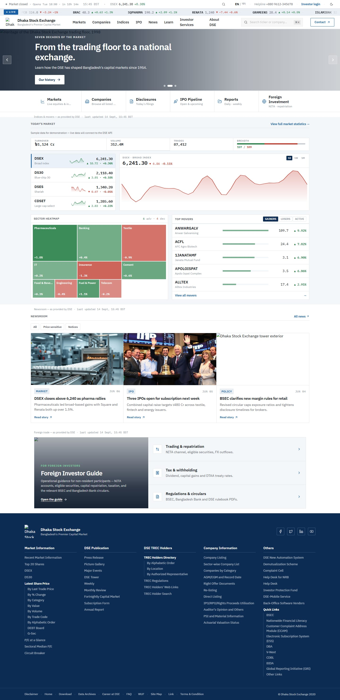

Dhaka Stock Exchange · launch day
The curtain is the chosen opening. It now takes 4.6 seconds instead of 1.8, the cover is opened by pressing and holding rather than clicking, and the panels part straight onto the homepage — no loading screen in between. The opening is scored: timpani and a cymbal crash on the downbeat, a brass fanfare rising into a held chord, and the exchange bell tolling three times over it, all ringing out into a hall. Confetti goes up as the panels clear. Everything here is the real thing, running live — not a video — over a screenshot of the new homepage.
Turn your sound on. Nothing plays until you press the cover, and there is a mute in the corner of the frame.
The whole sequence a guest sees on the day: the cover is waiting, a press and hold opens it, and the homepage is there behind it. Hold until the gold bar under the headline fills — light gathers in the seam and the music builds as you do. Let go early and it drains back, so nothing opens by accident.

Not part of the launch moment any more — the curtain opens straight onto the site. This is the everyday loading screen, shown while a page loads on any ordinary visit. The seal draws itself in like a stamp being struck, then the whole white sheet lifts away to uncover the page.